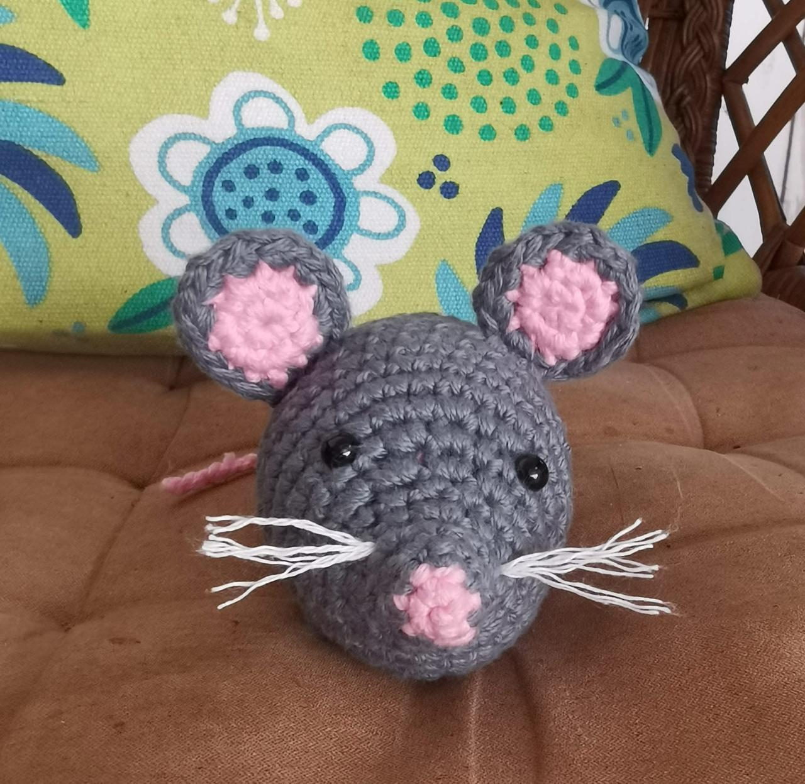

Patrones Digitales de Crochet

Llavero de Tulipán
-
Tiempo aproximado:
- 2h Materiales:
- Hilo abuelita, de color del que de su escogencia y verde
- Ganchillo de 3 mm
- Relleno
- Cable para el tallo

Oso Amigurumi
-
Tiempo aproximado:
- 9h Materiales:
- Hilo chenille color champagne
- Ganchillo de 5 mm
- Ojos de seguridad de 8mm
- Relleno
- Articulaciones

Ratoncito
-
Tiempo aproximado:
- 5h Materiales:
- Hilo de algodón, marca abuelita en color gris y rosado
- Ganchillo de 3.5 mm
- Ojos de seguridad de 5mm
- Relleno

Mercedita con orejas de Minnie Mouse
-
Tiempo aproximado:
- 15h Materiales:
- Hilo de algodón, marca sinfonia de color rojo, blanco y piel
- Ganchillo de 3 mm
- Ojos de seguridad de 5mm
- Relleno

Pukka y Garu
-
Tiempo aproximado:
- 10h Materiales:
- Hilo de algodón, marca abuelita de color rojo, blanco y negro
- Ganchillo de 3.5 mm
- Relleno